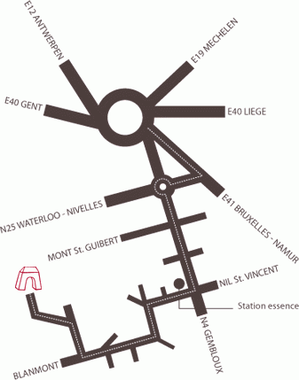

Lieu de rendez-vous
Les festivités
auront lieu au Domaine Al Poudre, site d'un ancien moulin à huile qui
doit son
nom au fait que Napoléon en fit un dépôt de munition en 1815. Dans un
registre plus festif, le domaine a également accueilli en 1865 la
brasserie Grade, à l'origine de la "Vieux Temps".
Le domaine est traversé par l'Orne, qui prend sa source près de
Gembloux et est un affluent de la Thyle et donc sous-affluent de
l'Escaut par la Dyle et le Rupel.

Itinéraire
- Autoroute E411 Bruxelles-Namur
- Sortie 9 Corroy-Le-Grand, LLN Sud
- N4 vers Gembloux
- Au rond-point de la pompe à essence Q8 à droite vers Blanmont
- Suivre le fléchage "Domaine Al Poudre"
Attention, l'accès par GPS se fait par la "rue de Bau" à Chastre.
> Version imprimable